催生政策下的人性與虛偽：我們都是別人遊戲裡的NPC
當今社會頻繁出現「少子化危機」的警告，催生政策不斷出台，鼓吹人們為國家、多生孩子。表面上這似乎是為了國家的未來、民族的延續，但若仔細拆解這些言論的背後，不難發現：真正受益的，往往不是那些努力養育下一代的父母，而是政客、資本家與特定職業群體。
我們不妨看看這些產業的數字：特教學校的年收入高達五百多萬台幣；禮儀公司年營收高達六百多萬新台幣，殯儀館的年收入達數千萬新台幣，骨灰壇工廠的年收甚至破億，而他們賺進的是死者帶來的「財富」；整容醫師年收入高達三十二萬美元；律師年薪破千萬。這些人靠著他人的缺陷、生老病死、容貌焦慮、糾紛維生。
所以當有人在網路上提出「反出生主義」、呼籲「讓痛苦終結在我這一代」時，這些既得利益者自然會感到不爽。因為反出生主義的本質，是拒絕再為這個不公的體制生產新的「消費者」、「病人」、「勞工」與「亡者」。
這看似殘酷，卻也誠實地揭示了現實：在一個沒有穩固社會安全網、物價飛漲、勞工困苦的世界中，鼓勵生育不過是用愛國與家庭價值包裝起來的制度延命術。那些催生的人，就像在玩《GTA》時的玩家，把現實中要生小孩的人當作遊戲裡的NPC，只要能讓系統繼續運轉，誰還在乎這些人的感受？
這不是單一個人的冷漠，而是深植於人性中的慣性——當自己是受益者，就不會主動關心別人的痛苦。就像GTA玩家不會為NPC的死感到悲傷一樣，體制的操控者，也不會為底層人民的困難感到痛心。
但這場遊戲是現實，不是虛擬世界。我們不是NPC，而是有思想、有痛感、有尊嚴的個體。如果制度持續將人視為工具，那麼「不再生育」不只是個人選擇，而是對整個體制最根本的抵抗。
未來，不會因為人口變少而毀滅，而是因為制度拒絕改變而崩塌。真正需要終結的不是生命本身，而是那個只會利用生命的遊戲規則。
註：下方五張插入圖片分別為台灣律師、美國各科醫師、台灣特教學校、台灣與殯葬相關的行業的收入，其中整形外科在美國各科醫師的收入排行榜中蠻前面的。由此可見，痛苦帶來多大的利潤啊，所以資本制度怎麼會允許苦難終結呢？

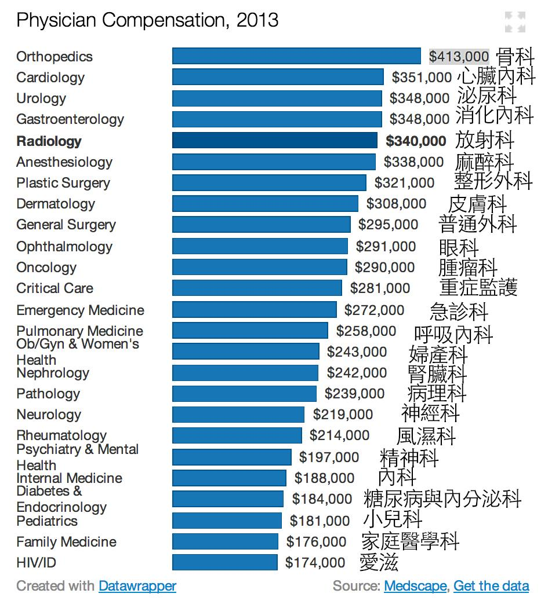
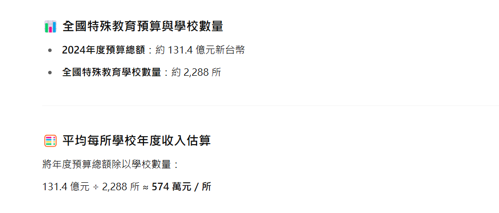
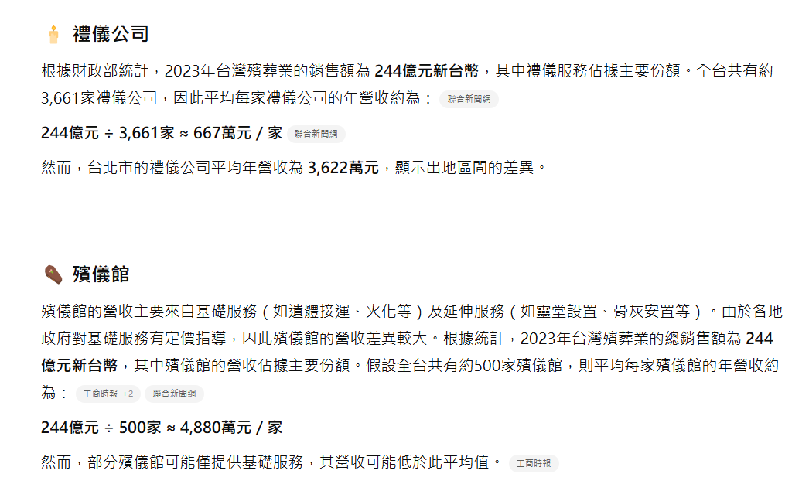
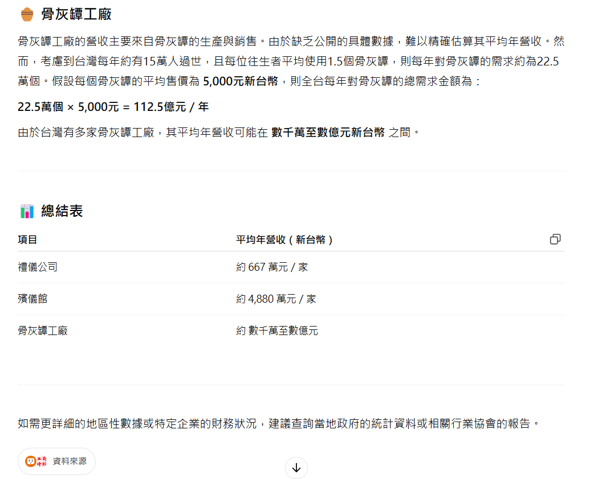
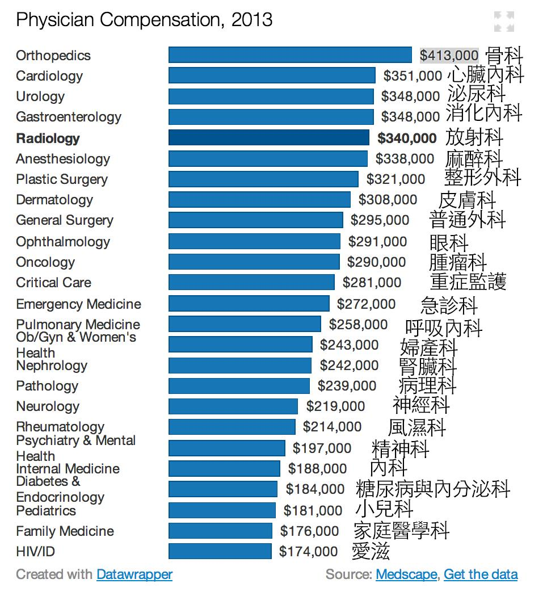
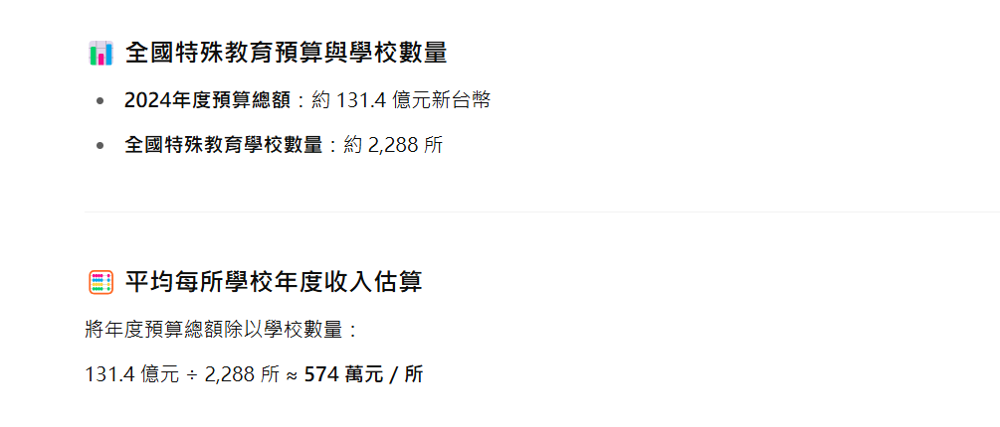
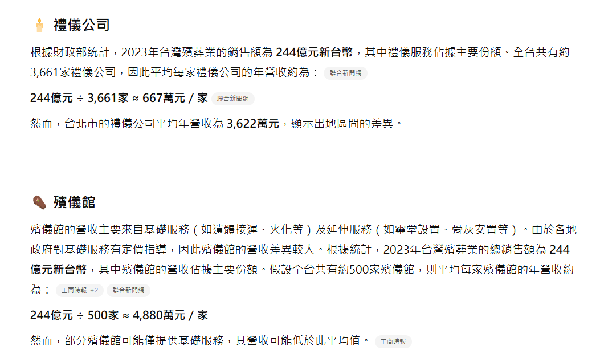
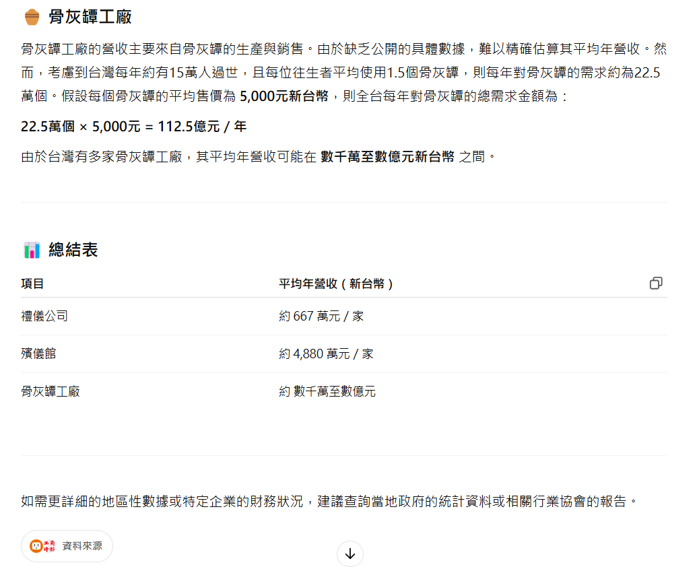
（註：下方這十七張插入圖片告訴我們養小孩的成本有多高以及社會安全網有多弱，所以想生孩子的人要有心理準備。我沒有在潑冷水，只是好心提醒一下而已。）
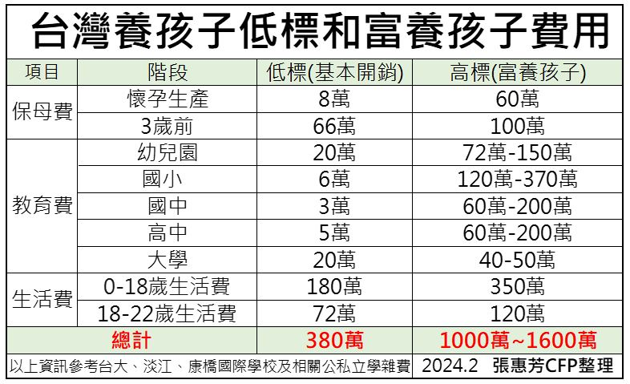
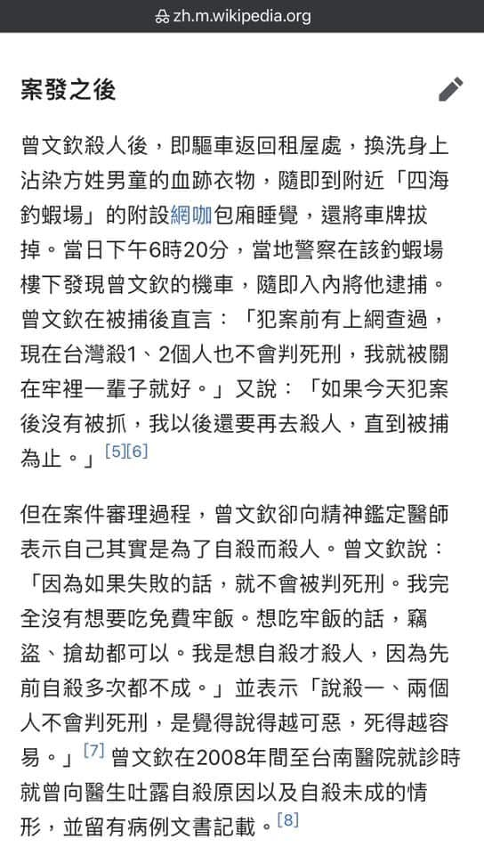

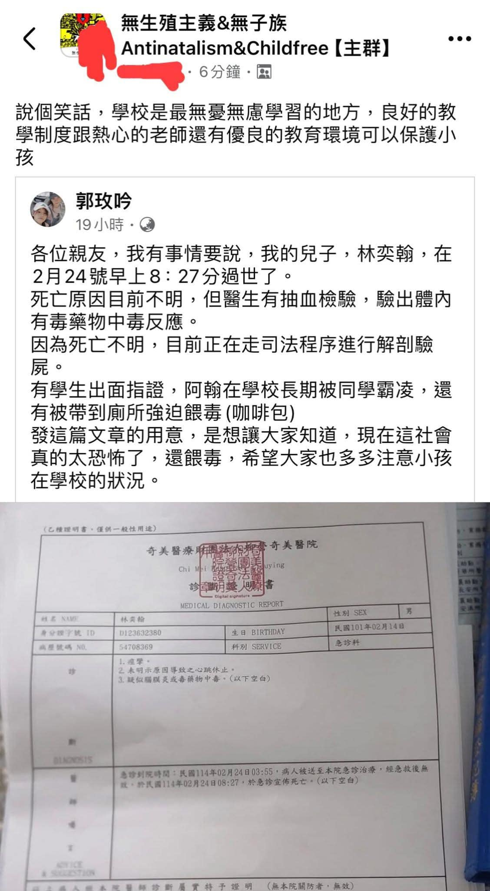 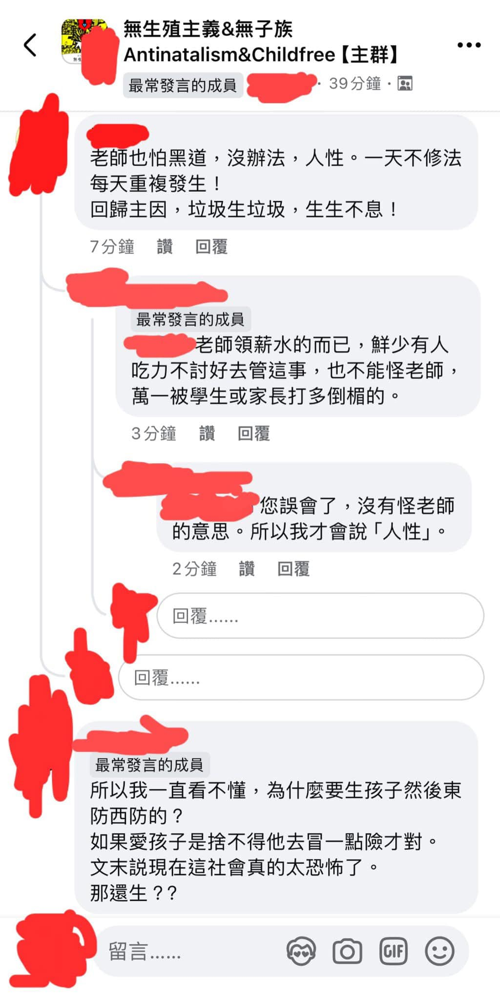
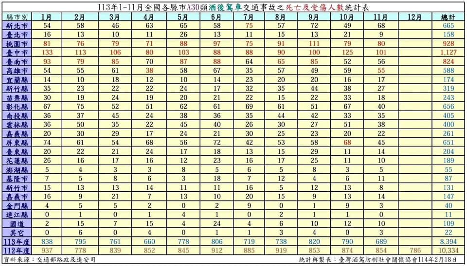
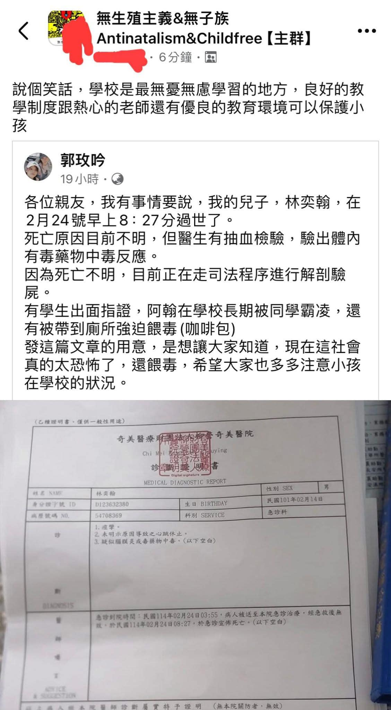 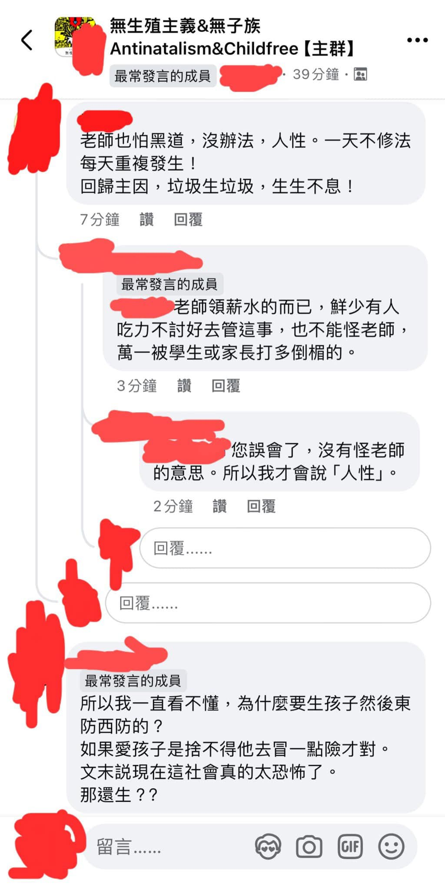
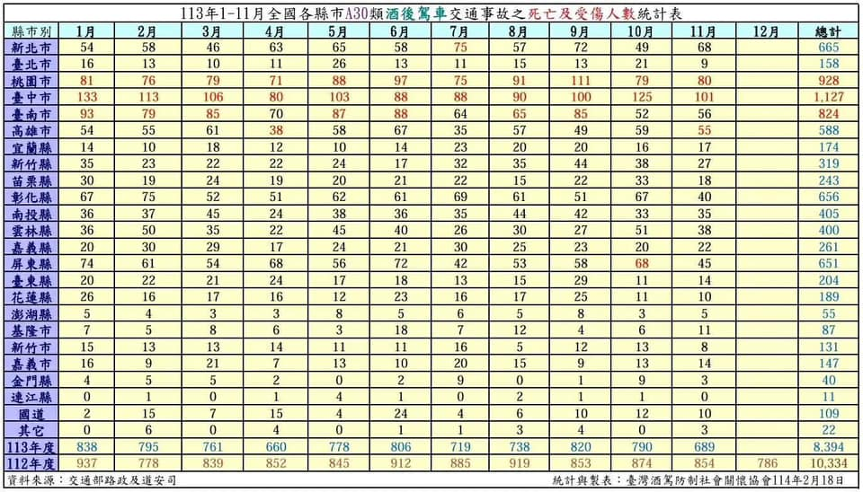